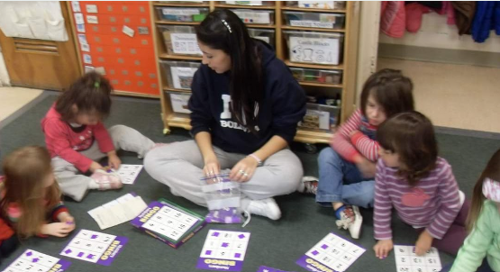
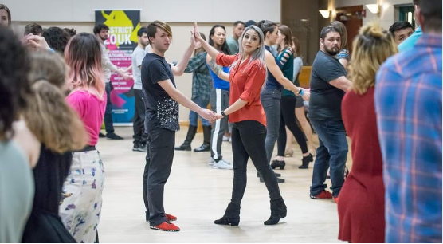

Teaching Children
My teaching journey began as a pre-school teacher and team lead. I enjoyed teaching and working with children so much that I got a degree in Early Childhood Education. For 10+ years, I taught multiple grades and implemented many curricula. I designed and delivered engaging lessons and developed evaluation criteria such as rubrics and standards. Analyzed assessment data to help reinforce skills students needed. These experiences gave me the reward of witnessing students be successful with the content I was teaching.
Teaching Adults
Teaching dance was an excellent way to merge two things I'm passionate about; teaching and dance. As a dance instructor, I developed and managed learning content for my students and helped evaluate and train new staff members to demonstrate the necessary and appropriate methodology for teaching various dance forms. Recently, I collaborated with a studio owner to create a digital training course on teaching strategies for new instructors. The course helped prepare instructors to double the number of booked lessons!
EdTech & Training
As a teacher, I had to find creative ways to engage children in learning. Technology allowed me to provide students with multiple methods for acquiring new information. I became the person many teachers came to for tech questions. This role led me to pursue a Master's in Educational Technology.
I implemented my newly acquired knowledge of adult learning principles to upskill colleagues. Throughout the pandemic, I was part of an EdTech team of volunteers to help train staff on using and managing new LMSs, Zoom, and tech tools to engage students and increase participation during distance learning.
Professional Goals
By completing my M.Ed. in Educational Technology, distance learning, and being part of the EdTech committee at my school, I gained experience using multimedia learning principles and the ADDIE Instructional Design model to develop web-based training materials for other educators.
My goal is to transition to a career where I can combine my knowledge and experience of how people learn, technology, and creativity to create transformative digital learning solutions for children or adults. Other skills I am interested in developing are UI/UX design, HTML5, and Project management.